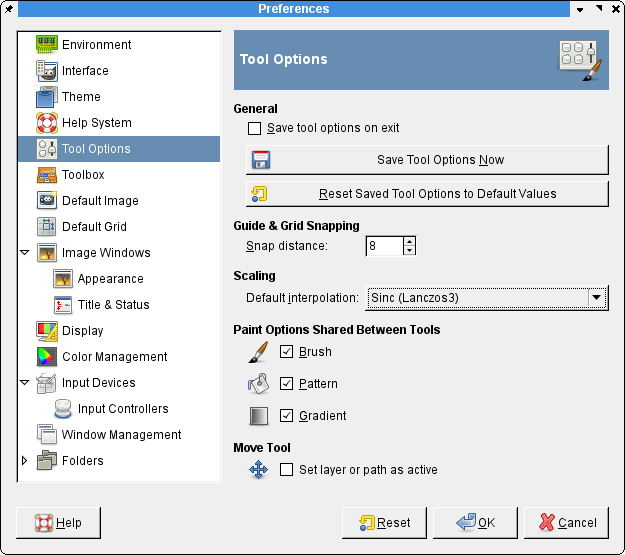
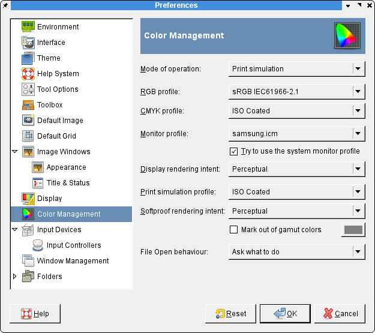

<html>
<head>
	<meta http-equiv="Content-Type" content="text/html; charset=UTF-8"/>
	<title>GIMP 2.x</title>
</head>
<body>
<h2>GIMP 2.x</h2>

<p>Tout a &eacute;t&eacute; dit sur le champion du traitement d'images pour Linux. La version 2.0 a apport&eacute; une liste d'am&eacute;liorations trop importante pour &ecirc;tre d&eacute;taill&eacute;e. </p>

<p>Cependant, configurer GIMP pour l'impressino avec Scribus requiert certaines modifications des valeurs par d&eacute;faut (voirci-dessous) : </p>

<ul>
<li>Certaines distributions n'installent pas l'extension "s&eacute;par&eacute;e" qui permet l'exportation des fichiers TIFF CMJN et Deux tons. Si vous voulez utiliser Deux tons c'est une extension recommand&eacute;e.</li>
<li>Assurez-vous d'avoir la derni&egrave;re version stable 2.x.x. Certains probl&egrave;mes majeurs ont &eacute;t&eacute; r&eacute;gl&eacute;s apr&egrave;s la version2.0.1.</li>
<li>GIMP peut maintenant travailler avec les couleurs CMJN. Bien que le mod&egrave;le de couleur interne soit toujours RVB plus un canal alpha, vous pouvez utiliser des mesures CMJN et des d&eacute;finitions de couleur CMYK. Pour compenser, il existe une extension appel&eacute;e Separate qui peut exporter des TIFF CMJN en utilisant une astuce avec les couches alpha. L'extension s&eacute;par&eacute;e peut aussi inclure les profils ICC dans le TIFF export&eacute;.</li>
<li>Une des am&eacute;liorations les plus appr&eacute;ci&eacute;e concerne la manipulation de texte. GIMP 2.x utilise <code>fontconfig</code>, donc localiser les polices dans votre syst&egrave;me est moins probl&eacute;matique qu'avant. Le texte peut &ecirc;tre conserv&eacute; dans un calque s&eacute;par&eacute; pour faciliter l'&eacute;dition et la correction. Dans les versions 1.2.x, certains types de manipulations &eacute;taient difficilement efectu&eacute;es, mais il n'y a presque plus de motif de plainte maintenant. C'est un plaisir d'utiliser les nouveaux contr&ocirc;les de texte. De plus, il existe aussi une extension s&eacute;par&eacute;e freetype pour GIMP, qui vous permet de manipuler le type de la m&ecirc;me mani&egrave;re que Scribus et Inkscape le font. Elle est recommand&eacute;e. Vous pouvez la trouver sur le site ftp.gimp.org.</li>
<li>La mani&egrave;re dont les pixels sont ajust&eacute;s (interpol&eacute;s) dans les filtres et les effets sont appliqu&eacute; lin&eacute;airement par d&eacute;faut. Il s'agit d'un bon compromis de vitesse versus pr&eacute;cision.  <b>"Cubique" devrait toujours &ecirc;tre la valeur par d&eacute;faut pour les travaux d'impression</b>, mais attendez-vous &agrave; ce que certaines op&eacute;rations (redimensionnement, application de filtre) s'ex&eacute;cutent plus lentement. Utiliser ce r&eacute;glage peut avoir une incidence importante dans la qualit&eacute; d'image per&ccedil;ue &agrave; l'impression.</li>
</ul>

<table width="100%"><tr><td align="center"></td></tr></table>

<p>Comme la plupart des &eacute;diteurs d'image, les valeurs par d&eacute;faut de GIMP conviennent &agrave; des images de site web, ce qui signifie une r&eacute;solution insuffisante pour l'impression. Donc, param&eacute;trez d'abord une r&eacute;solution <strong>minimum</strong> de144 PPP par d&eacute;faut. Notez  que le fait d'utiliser des r&eacute;solutions sup&eacute;rieures donnera des fichiers de plus grandes tailles, donc vous devrez aussi ajuster les param&egrave;tres d'usage maximum de m&eacute;moire dans les pr&eacute;f&eacute;rences de GIMP. </p>

<table width="100%"><tr><td align="center"></td></tr></table>

<p>L'autre ajout &agrave; signaler est le d&eacute;but d'une validation de base avec gestion des couleurs de vos images. Cette fonctionnalit&eacute; est disponible via littlecms, aussi utilis&eacute; par Scribus. Il est facile d'acc&eacute;der aux contr&ocirc;les par View > Display Filters. Cette fonctionnalit&eacute; peut &ecirc;tre consid&eacute;r&eacute;e
comme exp&eacute;rimentale pour le moment, mais attendez-vous &agrave; un affichage avec gestion des couleurs beaucoup plus complet dans GIMP 2.4. Les versions de d&eacute;veloppement 2.3.x les plus r&eacute;centesde GIMP d&eacute;montrent beaucoup plus de capacit&eacute;s de gestion des couleurs .</p>

<table width="100%"><tr><td align="center"></td></tr></table>

</body>
</html>